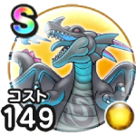

闇の覇者蒼き竜王
ドラクエ1＆2ReWALKこころ最大コスト+4スキルの斬撃ダメージ+10%ドルマ属性斬撃・体技ダメージ+12%魅了耐性+10%ターン開始時MPを5回復する / 9.0点
くわしい特徴
【ランク特殊効果】 こころ最大コスト+4スキルの斬撃・体技ダメージ+12%ドルマ属性斬撃・体技ダメージ+12%全属性ダメージ+12%スキルの会心ダメージ+12%魅了耐性+12%ターン開始時MPを12回復するこころ最大コスト+4スキルの斬撃ダメージ+10%ドルマ属性斬撃・体技ダメージ+12%魅了耐性+10%ターン開始時MPを5回復する